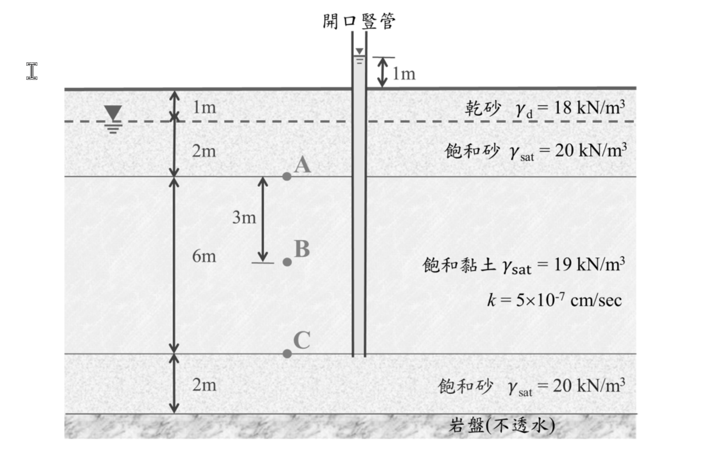

考題編號：SM-2021-1
主分類： SM-U1-4 土體內應力
副分類： SM-U1-2 土壤滲透
分析法： 有效應力法
標籤： 滲流 孔隙水壓 有效應力 水頭 達西定律
1. 原始題目重述 (Problem Restatement)
有一土壤剖面及穩定滲流狀況如下圖所示，黏土層下方之砂土層內已觀察到湧泉壓力，可使開口豎管內的水上升到高於地表面 $1\text{ m}$：（25 分）
(一) 計算 A 點、B 點、C 點之總應力、孔隙水壓及有效應力；
(二) 估計黏土層中滲流之方向及速率。

圖說：地表至 $1\text{ m}$ 深度為乾砂層（$\gamma_d = 18\text{ kN/m}^3$）；$1\text{ m}$ 至 $3\text{ m}$ 深度為飽和砂層（$\gamma_{sat} = 20\text{ kN/m}^3$），地下水位位於深度 $1\text{ m}$ 處；$3\text{ m}$ 至 $9\text{ m}$ 深度為厚度 $6\text{ m}$ 之飽和黏土層（$\gamma_{sat} = 19\text{ kN/m}^3$，$k = 5 \times 10^{-7}\text{ cm/sec}$）；$9\text{ m}$ 至 $11\text{ m}$ 為底層飽和砂層（$\gamma_{sat} = 20\text{ kN/m}^3$）。開口豎管自底部砂土層接出，水位高出地表 $1\text{ m}$。點 A 位於深度 $3\text{ m}$，點 B 位於深度 $6\text{ m}$，點 C 位於深度 $9\text{ m}$。
2. 考題核心精神與出題者意圖 (Core Concepts & Examiner's Intent)
本題旨在測驗考生對於一維穩定滲流（Steady-state seepage）狀態下，總水頭、孔隙水壓及有效應力的計算能力。
核心考點包含：
- 水頭的定義與計算：能正確判斷出不同深度的總水頭、位置水頭與壓力水頭（即孔隙水壓）。尤其是下方砂土層具有受壓地下水（Artesian pressure）時，豎管水位的物理意義。
- 穩定滲流下的水壓分布：理解在均質土層中發生穩定滲流時，總水頭及孔隙水壓會呈線性分布。
- 滲流方向及速率判斷：應用達西定律（Darcy's Law），由總水頭差決定水流方向，並由水力坡降求得滲流速率（流速）。
- 有效應力原理：熟練應用 $\sigma' = \sigma - u$ 計算各點之有效應力。
3. 解題戰略地圖與陷阱分析 (Strategic Roadmap & Trap Analysis)
作戰計畫：
- 設定基準面：以地表面為高程基準面（$z=0$），向下深度為正，高程為負。
- 計算各點總應力 ($\sigma$)：由上而下，依各土層之單位重（$\gamma_d, \gamma_{sat}$）乘上厚度累加。
- 計算各點總水頭 ($H$) 與孔隙水壓 ($u$)：
- A 點：上層砂土無滲流（靜水壓狀態），水位於深度 $1\text{ m}$，故 A 點水壓為深度 $1\text{ m}$ 至 $3\text{ m}$ 的靜水壓。
- C 點：豎管水位高出地表 $1\text{ m}$，可直接求出 C 點壓力水頭及水壓。
- B 點：為 A、C 間黏土層中點，由於發生穩定滲流，孔隙水壓隨深度線性變化，可藉由內插法或水力坡降求出。 - 計算各點有效應力 ($\sigma'$)：直接相減 $\sigma' = \sigma - u$。
- 判斷滲流方向與速率：
- 比較 A 點與 C 點之總水頭（$H_A$ 與 $H_C$），水流由總水頭高處流向低處。
- 計算水力坡降 $i = \Delta H / L$。
- 代入達西定律 $v = k \cdot i$ 計算滲流速率。
陷阱分析：
- 陷阱 1（孔隙水壓分佈誤判）：誤以為全深度皆為靜水壓（Hydrostatic pressure）分佈。必須認知到黏土層上下邊界的水頭不一致，因此黏土層內有滲流發生，孔隙水壓不再是單純的 $\gamma_w \cdot z_w$。
- 陷阱 2（豎管水位的解讀）：未能將「豎管水上升至高於地表 $1\text{ m}$」轉換為 C 點的壓力水頭（$h_p = 10\text{ m}$）。
- 陷阱 3（滲流速率與流量的混淆）：題目要求估計「速率（velocity）」，即計算滲流流速 $v = ki$ 即可，無需計算流量 $Q$。單位應注意與滲透係數保持一致（例如 $\text{cm/sec}$）。
3.5 變數層次分析 (Variable Hierarchy Analysis)
最終目標
計算土壤剖面中 A、B、C 三點之總應力、孔隙水壓、有效應力，並評估黏土層之滲流方向及速率。
本題關鍵公式（依計算順序）
-
總應力計算：
$$ \sigma = \sum \gamma_i \cdot \Delta z_i $$ -
總水頭、位置水頭與壓力水頭（孔隙水壓）關係式：
$$ H = z + \frac{u}{\gamma_w} \implies u = (H - z) \gamma_w $$ -
有效應力原理：
$$ \sigma' = \boxed{\sigma} - \boxed{u} $$ -
水力坡降：
$$ i = \frac{\Delta H}{L} = \frac{H_C - H_A}{L} $$ -
達西定律（滲流流速）：
$$ v = k \cdot \boxed{i} $$
L1：題目直接給定
| 符號 | 數值 | 說明 |
|---|---|---|
| $\gamma_{d,sand}$ | $18\text{ kN/m}^3$ | 表層乾砂單位重 |
| $\gamma_{sat,sand}$ | $20\text{ kN/m}^3$ | 飽和砂層單位重（上下層皆同） |
| $\gamma_{sat,clay}$ | $19\text{ kN/m}^3$ | 飽和黏土層單位重 |
| $k_{clay}$ | $5 \times 10^{-7}\text{ cm/sec}$ | 黏土層滲透係數 |
| $z_A$ | $3\text{ m}$ | A點深度 |
| $z_B$ | $6\text{ m}$ | B點深度 |
| $z_C$ | $9\text{ m}$ | C點深度 |
| $h_{pipe}$ | $+1\text{ m}$ | 豎管水位於地表以上之高度 |
L2：需知識點推導
孔隙水壓與水頭
| 符號 | 公式／來源 | 卡關? |
|---|---|---|
| $u_A$ | $u_A = (z_A - z_w) \cdot \gamma_w$ | |
| $u_C$ | $u_C = (z_C + h_{pipe}) \cdot \gamma_w$ | |
| $u_B$ | 依線性內插：$u_B = \frac{u_A + u_C}{2}$ （因 B 為中點） | |
有效應力與滲流計算
| 符號 | 公式／來源 | 卡關? |
|---|---|---|
| $\sigma'_i$ | $\sigma'_i = \sigma_i - u_i$ | |
| $i$ | $i = \frac{(u_C/\gamma_w - z_C) - (u_A/\gamma_w - z_A)}{z_C - z_A}$ | |
| $v$ | $v = k \cdot i$ | |
L3：深層知識（不懂就卡住）
| 知識點 | 說明 | 卡關? |
|---|---|---|
| 壓力水頭的幾何意義 | 開口豎管（Piezometer）的水位高度即為該量測點之「壓力水頭（Pressure head）」。由地表量起，深度 $9\text{ m}$ 的點，豎管水位在地表上 $1\text{ m}$，代表壓力水頭為 $10\text{ m}$。 | |
| 穩態滲流下的線性壓降 | 在均質土層中發生一維穩定滲流時，總水頭隨流程呈現線性折減，因此孔隙水壓變化曲線亦為兩點間的直線。 |
4. 步驟化詳細計算過程 (Step-by-Step Detailed Calculation)
為方便計算與符合常規，取水之單位重 $\gamma_w = 9.81\text{ kN/m}^3$。
定義地表面高程為基準面（即高程 $Elev. = 0\text{ m}$），向下深度 $z$ 為正，對應高程則為 $-z$。
(一) 計算 A、B、C 點之總應力、孔隙水壓及有效應力
1. 總應力 ($\sigma$) 計算：
-
A 點 (深度 $z=3\text{ m}$，含 $1\text{ m}$ 乾砂 + $2\text{ m}$ 飽和砂)：
$$ \sigma_A = 1\text{ m} \times 18\text{ kN/m}^3 + 2\text{ m} \times 20\text{ kN/m}^3 = 18 + 40 = \boxed{58\text{ kPa}} $$ -
B 點 (深度 $z=6\text{ m}$，A 點再往下 $3\text{ m}$ 飽和黏土)：
$$ \sigma_B = 58 + 3\text{ m} \times 19\text{ kN/m}^3 = 58 + 57 = \boxed{115\text{ kPa}} $$ -
C 點 (深度 $z=9\text{ m}$，A 點再往下 $6\text{ m}$ 飽和黏土)：
$$ \sigma_C = 58 + 6\text{ m} \times 19\text{ kN/m}^3 = 58 + 114 = \boxed{172\text{ kPa}} $$
2. 孔隙水壓 ($u$) 計算：
-
A 點：
上層砂土處於靜水壓狀態，地下水位在地表下 $1\text{ m}$ 處，故 A 點承受之壓力水頭為 $3\text{ m} - 1\text{ m} = 2\text{ m}$。
$$ u_A = 2\text{ m} \times 9.81\text{ kN/m}^3 = \boxed{19.62\text{ kPa}} $$ -
C 點：
C 點接有開口豎管，水位高於地表 $1\text{ m}$。C 點距地表深 $9\text{ m}$，故水柱總高度（壓力水頭）為 $1\text{ m} + 9\text{ m} = 10\text{ m}$。
$$ u_C = 10\text{ m} \times 9.81\text{ kN/m}^3 = \boxed{98.1\text{ kPa}} $$ -
B 點：
黏土層內發生穩定滲流，因土層均質，總水頭隨深度線性變化，進而孔隙水壓與深度亦呈線性關係。B 點剛好位於 A 點 ($z=3$) 與 C 點 ($z=9$) 之正中點 ($z=6$)。
依線性內插：
$$ u_B = \frac{u_A + u_C}{2} = \frac{19.62 + 98.1}{2} = \frac{117.72}{2} = \boxed{58.86\text{ kPa}} $$
3. 有效應力 ($\sigma'$) 計算：
根據有效應力原理 $\sigma' = \sigma - u$：
-
A 點：
$$ \sigma'_A = 58 - 19.62 = \boxed{38.38\text{ kPa}} $$ -
B 點：
$$ \sigma'_B = 115 - 58.86 = \boxed{56.14\text{ kPa}} $$ -
C 點：
$$ \sigma'_C = 172 - 98.1 = \boxed{73.9\text{ kPa}} $$
(註：若依部分實務與考場常見簡化取 $\gamma_w = 10\text{ kN/m}^3$ 計算，則 $\sigma'_A = 38\text{ kPa}$, $\sigma'_B = 55\text{ kPa}$, $\sigma'_C = 72\text{ kPa}$。)
(二) 估計黏土層中滲流之方向及速率
1. 判斷滲流方向：
計算 A、C 兩點之總水頭（$H = \text{高程水頭 } h_e + \text{壓力水頭 } h_p$）。令地表為高程 $0\text{ m}$，向上為正。
-
A 點總水頭：
高程水頭 $h_{e,A} = -3\text{ m}$
壓力水頭 $h_{p,A} = 2\text{ m}$
$$ H_A = -3 + 2 = -1\text{ m} $$ -
C 點總水頭：
高程水頭 $h_{e,C} = -9\text{ m}$
壓力水頭 $h_{p,C} = 10\text{ m}$ （依題意豎管水位高程即為總水頭 $H_C = +1\text{ m}$）
$$ H_C = -9 + 10 = +1\text{ m} $$
因為 $H_C (+1\text{ m}) > H_A (-1\text{ m})$，水流由高水頭流向低水頭。
滲流方向：由下往上（向上滲流，Upward Seepage）。
2. 計算滲流速率（流速 $v$）：
-
水力坡降 ($i$)：
流徑長度 $L = z_C - z_A = 9\text{ m} - 3\text{ m} = 6\text{ m}$
總水頭差 $\Delta H = H_C - H_A = 1 - (-1) = 2\text{ m}$
$$ i = \frac{\Delta H}{L} = \frac{2}{6} = \frac{1}{3} $$ -
滲流速率 ($v$)：
根據達西定律 $v = k \cdot i$：
$$ v = (5 \times 10^{-7}\text{ cm/sec}) \times \frac{1}{3} = \frac{5}{3} \times 10^{-7}\text{ cm/sec} \approx \boxed{1.667 \times 10^{-7}\text{ cm/sec}} $$
5. 關鍵爭議點與進階探討 (Critical Issues & Advanced Discussion)
- 水單位重的取用：國家考試中未特別指定 $\gamma_w$ 時，使用精確值 $9.81\text{ kN/m}^3$ 計算能展現觀念清晰度。然而，使用 $10\text{ kN/m}^3$ 在計算上會大幅減少計算錯誤的風險，通常閱卷委員兩者皆會給分。本題解中提供以 $9.81\text{ kN/m}^3$ 計算之嚴謹結果。
- 臨界水力坡降與砂湧檢核：本題為向上滲流，實務上需注意是否會造成上方土層發生砂湧（Boiling）。但由於本題向上滲流水頭差主要消耗於滲透性低的黏土層內，且未問及穩定性，故毋需額外計算砂湧安全係數。